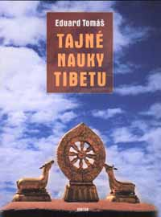

| název: | Tajné nauky Tibetu (orginál na Avataru) |
| autor: | Eduard Tomá¹ |

Struèný obsah:
Tøetí z cyklu pøedná¹ek Eduarda Tomá¹e v Unitarii. Doplòuje Jógu velkého symbolu, pøiná¹í øadu meditaèních námìtù a prùpravných mentálních cvièení k urychlení duchovního pokroku.
Ukázka z knihy:
"Dlouho jsem rozmý¹lel, ne¾ jsem se odhodlal ke zveøejnìní tohoto cyklu. Studoval jsem tajné nauky ji¾ pøed lety, bylo mi v¹ak ji¾ tehdy jasné, ¾e z toho, co bylo pochopeno, mù¾e být slovy sdìlena jen jistá èást. Pouhými slovy lze toti¾ øíci jen nìco ze vzácných mysterií, tìchto strmých a záhadných duchovních cest, dnes ji¾ témìø neznámých, tì¾ko pochopitelných, je¹tì hùøe napodobitelných a nìkdy témìø nereprodukovatelných. Tibetská mysteria nejsou a nikdy nebyla napsána jasnì na papír, ani vyryta do døevìných desek. To, co je v nich zachováno, je èasto psáno jen v glosách, náznacích, úryvcích nebo citátech, ve zcela jiném stylu a zcela jiným zpùsobem, ne¾ je ná¹ explikativní (výkladový), nìkdy a¾ pøíli¹ podrobný zpùsob západní. Nebylo snadné z tìchto náznakù a symbolù zachytit v¾dy základní ideu uèení, porozumìt stì¾ejní my¹lence, její¾ výklad byl jen doplòován osobním vedením kompetentního duchovního uèitele, gurua. Dnes je málo tìchto velkých znalcù, ¾ijí veøejnosti neznámi a v ústraní. Osobní vedení bylo nutno nahradit pøímým vstupem do oblasti neosobna, kde tito mudrci dodnes pùsobí. Nìkteré vìci, speciálnì získávání ezoterických sil, nebyly provìøovány. Ne ¾e by to nebylo mo¾né, kdy¾ tomu èlovìk vìnuje patøièný èas a úsilí. Nepátráme v¹ak po silách a zázracích, ale po Pravdì, a proto bylo zamìøeno studium i vlastní pátrání pøesnì tímto smìrem. Bude proto asi zklamán, kdo si pøedstavuje, ¾e se tu nauèí sedìt na klasu, vyvolávat tibetské duchy a démony, ovládat bouøe a blesky a létat vzduchem jako Milarepa. Nic takového není v programu, i kdy¾ se pøirozenì nevyhneme nìkterým zvlá¹tním zku¹enostem. My v¹ak hledáme Pravdu a ne podru¾né síly kolem ní. Jdeme proto smìrem Pravdy, smìrem koneèného osvobození du¹e od vrozených i v¹típených klamù a omylù. Nebudeme dìlat zámìrné odboèky k silám a zjevùm ni¾¹ích duchovních svìtù, ba ani zastávky. Pro Pravdu neváháme nastoupit jakkoliv obtí¾nou a namáhavou cestu, a» vede pøes nebe nebo pøes peklo. Óm namó sarvat Tathágata! A» jsou pozdraveni v¹ichni takto jdoucí! Poklady jejich nauk nech» zazáøí v na¹ich srdcích jako ¾ivý, sám ze sebe záøící, nejèist¹í krystal. Óm namó sarvat Tathágata! Posly¹te uèení objasòující samoèinné zplození moudrosti souèasnì zrozeného. Moudrosti dosa¾ené odvá¾nou tantrickou cestou ovládání vìdomí a dechu, je¾ pøinále¾ejí dokonalému lidskému tìlu: Prastaré uèení indicko-tibetské sestává ze dvou základních èástí. Z nauky, která se jmenuje jóga velikého symbolu, kterou jsme ji¾ poznali v minulém pøedná¹kovém cyklu, a z dal¹ích ¹esti tajných nauk tantrických..."